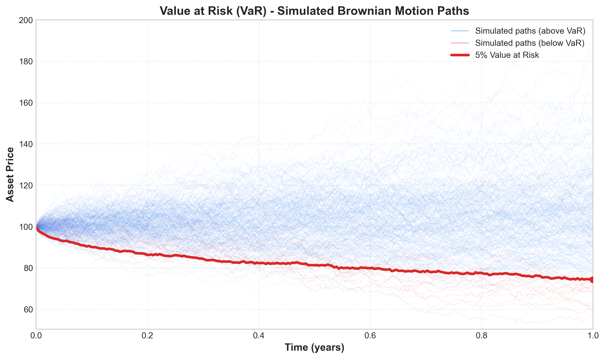

1 Introduction
The past four decades have been shaped by extreme events in financial markets, such as the Black Monday crash, the dot-com bubble, and the 2008 global financial crisis. These supposedly rare events highlighted that reducing systemic risk is crucial for financial stability (Embrechts et al. 2014). This led to the introduction and tightening of the Basel Accords, which use risk measures to determine appropriate risk capital requirements for financial institutions.
Value at Risk (VaR) remains the most popular measure for downside market risk, despite a shift towards the severity-based expected shortfall (ES) (Embrechts et al. 2014). For a long equity portfolio, the \(p\)% VaR for period \(t\) forecasted at time \(t-1\) is defined as the negative \(p\)-quantile of the conditional portfolio return distribution:
\[ \text{VaR}_t^p=-Q_p(r_{\text{PF},t}|\mathcal{F}_{t-1})=-\inf_x\{x\in\mathbb{R}:\mathbb{P}(r_{\text{PF},t}\leq x|\mathcal{F}_{t-1})\geq p\},\quad p\in(0,1). \tag{1}\]
Here, \(Q_p(\cdot)\) denotes the quantile function and \(\mathcal{F}_{t-1}\) represents all information available at time \(t-1\). The parameter \(p\) indicates that with target probability \(p\), the portfolio losses will exceed the VaR (Marc S. Paolella, Kuester, and Mittnik 2006).
Due to the practical relevance of VaR, it is essential to determine estimation methods that neither severely underestimate nor overestimate future losses. Many models use the generalized autoregressive conditional heteroskedasticity (GARCH) framework (Bollerslev 1986) or extensions to account for volatility clustering and the “leverage effect” in financial time series.
A fundamental question in VaR modeling is whether more complex multivariate models outperform simpler univariate alternatives. Santos, Nogales, and Ruiz (2013) found that multivariate models significantly outperform univariate counterparts for large portfolios, while Kole et al. (2017) found that multivariate models have greater predictive ability, though differences are often not significant. They also found that data frequency is more important than model choice.
This study compares factor copula-DCC-NGARCH models introduced by Fortin, Simonato, and Dionne (2022) with established models like the diagonal MixN(k)-GARCH (Haas, Mittnik, and Paolella 2004) and the COMFORT model class (Marc S. Paolella and Polak 2015). We show that multivariate models display desirable VaR properties in terms of correct unconditional coverage and independence of violations, though we don’t find sufficient evidence to claim that multivariate approaches outperform univariate procedures in terms of forecast ability, or vice versa.
2 Methodology
2.1 Univariate Models
For univariate models, we assume the following portfolio return dynamics:
\[ r_{\text{PF},t} = \mu + \epsilon_t \]
where
\[ \epsilon_t = \sigma_t z_t, \quad z_t \stackrel{iid}{\sim} F(0,1) \]
Here, \(F(0,1)\) is a standardized distribution, \(\mu\) is the unconditional location, and \(\sigma_t\) is the scale parameter. The conditional variance \(\sigma_t^2 = \mathbb{V}[r_{\text{PF},t}|\mathcal{F}_{t-1}]\) is modeled as non-constant.
2.1.1 GARCH and Extensions
The standard GARCH(1,1) model (Bollerslev 1986) is formulated as:
\[ \sigma_t^2 = \omega + \alpha\epsilon_{t-1}^2 + \beta\sigma_{t-1}^2 \tag{2}\]
where \(\omega > 0, \alpha \geq 0\), and \(\beta \geq 0\). For covariance stationarity, the parameters must satisfy \(\alpha + \beta < 1\).
A special case is the exponentially weighted moving average (EWMA):
\[ \sigma^2_t = \lambda\sigma^2_{t-1} + (1-\lambda)\epsilon_t^2, \quad \lambda \in (0,1) \tag{3}\]
This formulation puts more weight on recent observations, but is not covariance stationary since \(\lambda + (1-\lambda) = 1\).
To account for the “leverage effect” (negative news increasing volatility more than positive news of equal magnitude), we include the GJR-GARCH(1,1) model (Glosten, Jagannathan, and Runkle 1993):
\[ \sigma_t^2 = \omega + (\alpha + \gamma I_{t-1})\epsilon_{t-1}^2 + \beta\sigma_{t-1}^2 \tag{4}\]
where \(I_{t-1} = \mathbb{I}_{\{\epsilon_{t-1} < 0\}}\) is an indicator function.
Another asymmetric model is the NGARCH(1,1) (R. F. Engle and Ng 1993):
\[ \sigma_t^2 = \omega + \alpha\sigma_{t-1}^2(\epsilon_{t-1} - \theta)^2 + \beta\sigma_{t-1}^2 \]
For \(\theta > 0\), negative innovations have a larger impact on conditional variance than positive errors of the same magnitude.
2.1.2 Mixed Normal GARCH
We also include the k-component mixed normal GARCH(1,1) (MixN(k)-GARCH) (Haas, Mittnik, and Paolella 2004), where the conditional distribution of the error term \(\epsilon_t\) is assumed to be mixed normal with zero mean:
\[ \epsilon_t|\mathcal{F}_{t-1} \sim \text{Mix}_k\text{N}(p_1,...,p_k, \mu_1,...,\mu_k, \sigma_{1,t}^2,...,\sigma_{k,t}^2), \quad \sum_{i=1}^k p_i\mu_i = 0 \]
The associated conditional variances follow GARCH processes:
\[ \sigma_{i,t}^2 = \omega_i + \alpha_i\epsilon_{i,t-1}^2 + \beta_i\sigma_{i,t-1}^2, \quad i=1,...,k \]
2.2 Multivariate Models
2.2.1 Factor Copula-DCC-GARCH Model
The factor copula model proposed by Fortin, Simonato, and Dionne (2022) uses equity factors to capture the main risks of stock returns. It utilizes the Carhart four-factor model (Carhart 1997), which adds a momentum factor to the Fama-French three-factor model (Fama and French 1993):
\[ r_{k,t} - r_{f,t} = \alpha_{k,t} + \beta_{k, \text{RMRF}}\text{RMRF}_t + \beta_{k,\text{SMB}}\text{SMB}_t + \beta_{k,\text{HML}}\text{HML}_t + \beta_{k, \text{MOM}}\text{MOM}_t + \varepsilon_{k,t} \tag{5}\]
or in vector form:
\[ r_{k,t} - r_{f,t} = \alpha_{k,t} + \mathbf{\beta}_k'\mathbf{r}_{\text{F},t} + \varepsilon_{k,t} \tag{6}\]
This reduces dimensionality by modeling only four factors instead of all portfolio constituents.
For the factor dynamics, we use the Dynamic Conditional Correlation (DCC) structure (R. Engle 2002), which decomposes the conditional covariance matrix into standard deviations and correlations:
\[ \mathbf{Y}_{t}|\mathcal{F}_{t-1} \sim \mathcal{N}_n(\mathbf{\mu}, \mathbf{\Sigma_t}), \quad \mathbf{\Sigma_t} = \mathbf{D_t}\mathbf{\Gamma_t}\mathbf{D_t} \tag{7}\]
where \(\mathbf{D_t} = \text{diag}(\sigma_{1,t},\sigma_{2,t},...,\sigma_{n,t})\) contains the conditional standard deviations.
To account for non-normality, we use copulas to model the joint conditional distribution of factor returns. Copulas allow modeling marginals independently of the multivariate distribution. By Sklar’s theorem:
\[ \mathbf{F_t}(\mathbf{z_t}) = \mathbf{C_t}(F_{1,t}(z_{1,t}),...,F_{n,t}(z_{n,t})) \tag{8}\]
where \(\mathbf{F_t}(\mathbf{z_t})\) is the joint conditional distribution, \(F_{i,t}(\cdot)\) are the conditional marginals, and \(\mathbf{C_t}:[0,1]^n \rightarrow [0,1]\) is the conditional copula.
2.2.2 COMFORT Model
The Common Market Factor Non-Gaussian Returns (COMFORT) model (Marc S. Paolella and Polak 2015) uses a multivariate generalized hyperbolic (MGHyp) distribution with a CCC or DCC structure for the covariance matrix. This model can be expressed as a continuous normal mixture:
\[ \mathbf{Y_t} = \mathbf{\mu} + \mathbf{\gamma} G_t + \mathbf{\varepsilon_t}, \quad \mathbf{\varepsilon_t} = \mathbf{\Sigma_t}^{1/2}\sqrt{G_t}\mathbf{Z_t} \tag{9}\]
where \(\mathbf{Z_t} \stackrel{iid}{\sim} \mathcal{N}_n(\mathbf{0},\mathbf{I_n})\) and the mixing random variables \(G_t|\mathcal{F}_{t-1} \sim \text{GIG}(\lambda_t,\chi_t,\psi_t)\) follow a generalized inverse Gaussian distribution.
An important property of the MGHyp distribution is that it is closed under linear operations. Therefore, portfolio returns \(r_{\text{PF},t} = \mathbf{w}'\mathbf{Y_t}\) are univariate GHyp distributed:
\[ r_{\text{PF},t}|\mathcal{F}_{t-1} \sim \text{GHyp}(\mathbf{w}'\mathbf{\mu},\mathbf{w}'\mathbf{\gamma},\mathbf{w}'\mathbf{\Sigma_t}\mathbf{w},\lambda_t,\chi_t, \psi_t) \tag{10}\]
2.3 Data
We use an equally weighted portfolio of ten large-cap stocks (identical to those used by Fortin, Simonato, and Dionne (2022)): Boeing, Caterpillar, Chevron, Coca-Cola, Exxon, GE, IBM, Merck, P&G, and UTC. However, we analyze 2,767 daily returns from January 2, 2001, to December 30, 2011, rather than weekly returns.
The return data shows that most factors and stocks have means close to zero, with the median larger than the mean in most cases. The mean absolute deviation (MAD) is considerably smaller than the standard deviation, indicating the presence of outliers. Most returns are left-skewed with leptokurtic behavior, and all return distributions reject the assumption of normality based on Jarque-Bera statistics.
Figure Figure 1 shows autocorrelation function (ACF) plots for the factors. It is evident that the factors exhibit stronger autocorrelation in absolute returns than in the returns themselves, justifying the use of volatility models.
Figure Figure 2 shows Q-Q plots of the robust squared Mahalanobis distances against \(\chi^2\) distributions. The non-linear relationship indicates large multivariate outliers and multivariate non-normality.
Figure Figure 3 demonstrates blatant volatility clustering (Panel A) and that the portfolio returns are not normally distributed (Panel B).
2.4 Value at Risk Forecasts
For all models, we assume a constant conditional mean over time. Forecasting uses a rolling window approach with the previous 1,000 observations to predict the one-step-ahead VaR.
For univariate GARCH models (except MixN(k)-GARCH), we use the analytical formula:
\[ \widehat{\text{VaR}_t^p} = -\mu_{\text{PF}} - \sigma_{\text{PF}, t} Q_p(z_t|\mathcal{F}_{t-1}) \tag{11}\]
where \(\sigma_{\text{PF}, t}\) is the conditional standard deviation and \(Q_p(z_t)\) is the p-quantile of the standardized returns.
For the factor copula-DCC-(N)GARCH models, we simulate factor returns, apply the Carhart model to generate single stock returns, and calculate the portfolio return. The VaR estimate is then the negative p-quantile of the simulated portfolio returns.
For the COMFORT model, we use the p-quantile function of the corresponding conditional univariate GHyp distribution:
\[ \widehat{\text{VaR}_t^p} = -Q_p(r_{\text{PF},t}|\mathcal{F}_{t-1}) \tag{12}\]
2.5 Backtesting
Backtesting checks whether the forecasts exhibit desirable properties. Following Christoffersen (1998), we use three likelihood-ratio tests.
Let \(I_t\) be the indicator variable for a \(\text{VaR}_t^p\) forecast:
\[ I_t = \mathbb{I}_{\{r_{\text{PF},t} < -\text{VaR}_t^p\}} = \begin{cases} 1 & \text{if } r_{\text{PF},t} < -\text{VaR}_t^p \\ 0 & \text{otherwise} \end{cases} \]
A sequence of VaR forecasts is efficient with respect to \(\mathcal{F}_{t-1}\) if:
\[ \mathbb{E}[I_t|\mathcal{F}_{t-1}] = \mathbb{E}[I_t|I_{t-1},I_{t-2},...,I_1] = p, \quad t=1,2,...,T \tag{13}\]
This is equivalent to testing that \(\{I_t\}_{t=1}^T \overset{\text{iid}}{\sim} \text{Bernoulli}(p)\).
2.5.1 Unconditional Coverage Test
This tests whether the expected value of \(I_t\) equals \(p\):
\[ H_0: \mathbb{E}[I_t] = p \quad \text{versus} \quad H_A: \mathbb{E}[I_t] \neq p \]
The likelihood-ratio test statistic is:
\[ LR_{uc} = -2\log\left(\frac{L(p;I_1,I_2,...,I_T)}{L(\hat{p};I_1,I_2,...,I_T)}\right) \overset{\text{asy}}{\sim} \chi_1^2 \tag{14}\]
where \(\hat{p} = \frac{n_1}{n_0+n_1}\) is the maximum likelihood estimate of \(p\).
2.5.2 Independence Test
This tests whether the indicator sequence is independently distributed, against a first-order Markov chain alternative:
\[ LR_{ind} = -2\log\left(\frac{L(\hat{\Pi}_2;I_2,...,I_T|I_1)}{L(\hat{\Pi}_1;I_2,...,I_T|I_1)}\right) \overset{\text{asy}}{\sim} \chi_1^2 \tag{15}\]
where \(\hat{\Pi}_1\) and \(\hat{\Pi}_2\) are the estimated transition probability matrices under the alternative and null hypotheses.
2.5.3 Conditional Coverage Test
This combines the unconditional coverage and independence tests:
\[ LR_{cc} = -2\log\left(\frac{L(p;I_2,...,I_T|I_1)}{L(\hat{\Pi}_1;I_2,...,I_T|I_1)}\right) \overset{\text{asy}}{\sim} \chi_2^2 \tag{16}\]
It can also be calculated as:
\[ LR_{cc} = LR_{uc} + LR_{ind} \]
2.6 Comparison of Predictive Ability
To rank VaR estimates, we use the “tick” loss function:
\[ L_V(\theta_t, r_{\text{PF},t}) = (r_{\text{PF},t} + \theta_t)(p - \mathbb{I}_{\{r_{\text{PF},t} < -\theta_t\}}) \]
This loss function has the property that:
\[ Q_p(r_{\text{PF},t}|\mathcal{F}_{t-1}) = -\text{VaR}_t^p = \arg\min_{\theta_t} \mathbb{E}[L_V(\theta_t, r_{\text{PF},t})] \tag{17}\]
For statistical inference, we use the conditional predictive ability (CPA) test (Giacomini and White 2006). The null hypothesis of equal conditional predictive ability is:
\[ H_0: \mathbb{E}[\Delta L_{i,j,t}|\mathcal{F}_{t-1}] = 0 \quad \text{almost surely } \forall t \]
where \(\Delta L_{i,j,t} = L_{V_{i,t}} - L_{V_{j,t}}\) is the loss differential between models i and j.
The test statistic is:
\[ GW_{i,j} = T\bar{Z}'\hat{\Omega}\bar{Z} \overset{d}{\rightarrow} \chi^2_q \quad \text{as } T \rightarrow \infty \]
where \(Z_t = h_{t-1}\Delta L_{i,j,t}\), \(\bar{Z} = \frac{1}{T}\sum_{t=2}^T Z_t\), and \(\hat{\Omega} = \frac{1}{T}\sum_{t=2}^T Z_t Z_t'\).
3 Results
3.1 Value at Risk Backtests
Figure Figure 4 shows the Q-Q plot of OLS residuals, clearly indicating their non-normality.
Table 1 shows that while all univariate models passed the likelihood ratio test of independence, only a few showed adequate conditional or unconditional coverage. In particular, only the skewed-t GJR-GARCH passed the test of conditional coverage for both VaR levels. In contrast, most multivariate models passed all likelihood ratio tests, with the exception of the multivariate normal (MN)-DCC-GARCH.
It’s notable that using skewed-t NGARCH marginals in the factor copula framework leads to a very low percentage of violations compared to other models. Surprisingly, even using a normal copula with normal GARCH marginals for factor returns produces sound VaR estimates, possibly because much of the multivariate non-normality of stock returns might be captured in the bootstrapped OLS residuals.
Models assuming normality of returns (GARCH, EWMA, and MN-DCC-GARCH) consistently show too many violations, with none displaying adequate conditional or unconditional coverage. For these models, the percentage of violations is higher than the corresponding VaR level. For the COMFORT and factor copula models, however, we observe fewer violations than expected.
The most adequate coverage is achieved by the factor copula-DCC models with GARCH marginals for the 1% VaR level and by the COMFORT models for the 5% level. The factor skewed-t copula with GARCH marginals belongs to the three models with the most appropriate coverage for both VaR percentiles.
Nearly all exceedances for the COMFORT models occurred during or after the 2008 financial crisis, despite passing the independence test. At the 1% VaR level, Gaussian models without leverage effects have approximately three times as many exceedances as expected. At the 5% VaR level, this discrepancy is smaller.
3.2 Conditional Predictive Ability Tests
In terms of average tick loss, univariate models perform well despite their suboptimal backtesting results. The skewed-t GJR model had the lowest and the MN-DCC-GARCH the highest average loss for both VaR levels. Multivariate models achieve better ranks at the 1% level than at the 5% level, with factor copula-based models showing lower average loss than COMFORT models at both levels.
Within the factor copula-DCC models, GARCH marginals achieved lower mean losses than skewed-t NGARCH marginals, reinforcing the hypothesis that bootstrapped OLS residuals account for much of the non-normality in stock returns.
The CPA test results show that the MN-DCC-GARCH is significantly outperformed by every other model. Most rejections occur in univariate vs. univariate or multivariate vs. multivariate comparisons. For multivariate models, factor copula-DCC models using skewed-t NGARCH marginals have significantly higher predictive ability than their counterparts with normal GARCH marginals. The normal copula is superior for skewed-t NGARCH marginals, but for normal GARCH marginals, the t and skewed-t copula versions significantly outperform the normal copula.
At the 5% VaR level, in addition to MN-DCC-GARCH, the MixN(3)-GARCH is also significantly outperformed by all other models. The Student t GJR-GARCH, skewed-t GJR-GARCH, and MixN(2)-GARCH all display significantly higher predictive ability than the COMFORT models.
Interestingly, the skewed-t GJR-GARCH, which significantly outperformed every other univariate model, did not achieve significantly better VaR forecasts than the factor copula-DCC-(N)GARCH models.
4 Conclusion
Our study assessed various univariate and multivariate models for VaR forecasting. Most univariate models produced inadequate VaR estimates with too many violations, while most multivariate models displayed adequate coverage with independently occurring VaR exceedances.
The CPA tests revealed that the MN-DCC-GARCH model is significantly outperformed by all other models, which is expected given the evident multivariate non-normality of stock returns. However, we found no general, significant outperformance of multivariate models over univariate ones, or vice versa, at either VaR level.
One important finding is that using daily returns (higher frequency data) makes the factor copula-DCC-NGARCH models feasible for VaR forecasting, consistent with Kole et al. (2017) who found that data frequency is more important than model choice for VaR forecasts.
We also found that replacing skewed-t NGARCH marginals with normal GARCH marginals for factor returns increased predictive accuracy and yielded better unconditional coverage. This may be because OLS residuals from the Carhart model capture most of the multivariate non-normality in stock returns.
For future research, it would be interesting to examine how the factor copula-DCC-GARCH model performs with larger portfolios, which would highlight the advantage of its dimensionality reduction. The only computationally expensive parts—fitting the DCC-GARCH structure and the copula—depend only on the number of factors, not the portfolio size.
5 References
Bollerslev, Tim. 1986. “Generalized Autoregressive Conditional Heteroskedasticity.” Journal of Econometrics 31 (3): 307–27.
Carhart, Mark M. 1997. “On Persistence in Mutual Fund Performance.” The Journal of Finance 52 (1): 57–82.
Christoffersen, Peter F. 1998. “Evaluating Interval Forecasts.” International Economic Review 39 (4): 841–62.
Embrechts, Paul, Giovanni Puccetti, Ludger Rüschendorf, Ruodu Wang, and Antonela Beleraj. 2014. “An Academic Response to Basel 3.5.” Risks 2 (1): 25–48.
Engle, Robert. 2002. “Dynamic Conditional Correlation: A Simple Class of Multivariate Generalized Autoregressive Conditional Heteroskedasticity Models.” Journal of Business & Economic Statistics 20 (3): 339–50.
Engle, Robert F, and Victor K Ng. 1993. “Measuring and Testing the Impact of News on Volatility.” The Journal of Finance 48 (5): 1749–78.
Fama, Eugene F., and Kenneth R. French. 1993. “Common Risk Factors in the Returns on Stocks and Bonds.” Journal of Financial Economics 33 (1): 3–56.
Fortin, Alain-Philippe, Jean-Guy Simonato, and Georges Dionne. 2022. “Forecasting Expected Shortfall: Should We Use a Multivariate Model for Stock Market Factors?” International Journal of Forecasting 39 (January).
Giacomini, Raffaella, and Halbert White. 2006. “Tests of Conditional Predictive Ability.” Econometrica 74 (6): 1545–78.
Glosten, Lawrence R., Ravi Jagannathan, and David E. Runkle. 1993. “On the Relation Between the Expected Value and the Volatility of the Nominal Excess Return on Stocks.” The Journal of Finance 48 (5): 1779–1801.
Haas, Markus, Stefan Mittnik, and Marc S Paolella. 2004. “Mixed Normal Conditional Heteroskedasticity.” Journal of Financial Econometrics 2 (2): 211–50.
Kole, Erik, Thijs Markwat, Anne Opschoor, and Dick Van Dijk. 2017. “Forecasting Value-at-Risk Under Temporal and Portfolio Aggregation.” Journal of Financial Econometrics 15 (4): 649–77.
Paolella, Marc S, Keith Kuester, and Stefan Mittnik. 2006. “Value-at-Risk Prediction: A Comparison of Alternative Strategies.” Journal of Financial Econometrics 4 (1): 53–89.
Paolella, Marc S., and Paweł Polak. 2015. “COMFORT: A Common Market Factor Non-Gaussian Returns Model.” Journal of Econometrics 187 (2): 593–605.
Santos, A. A. P., F. J. Nogales, and E. Ruiz. 2013. “Comparing Univariate and Multivariate Models to Forecast Portfolio Value-at-Risk.” Journal of Financial Econometrics 11 (2): 400–441.